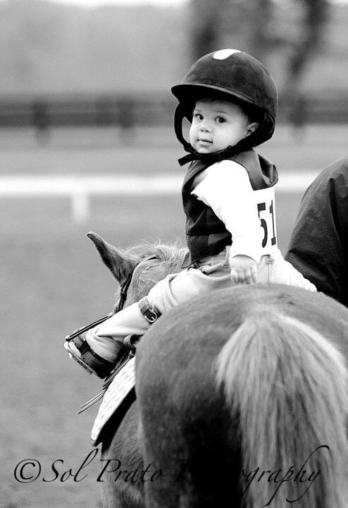
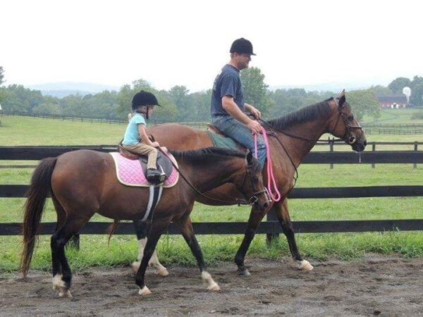
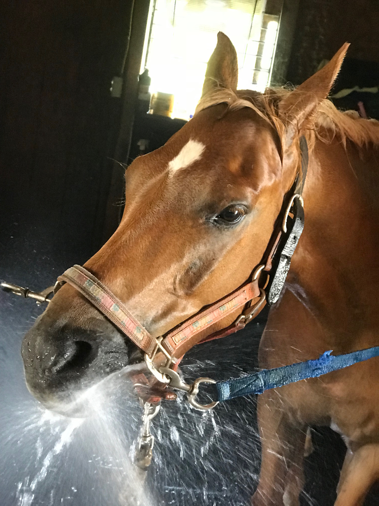
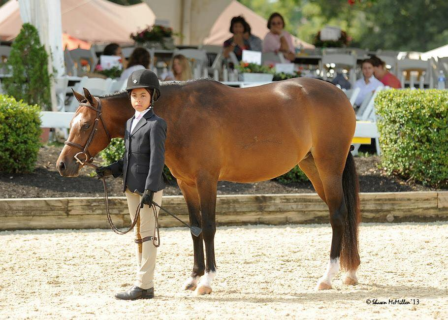

Ponies
Ponies for sale, lease, and remembering.
A shared space for sale ponies, lease opportunities, community boards, and the stories behind them.

Smart Pony Finder
Shop by the questions trainers ask first.
Size, division, rider fit, budget, location, video, and whether this pony needs a tiny saint or a kid with a real leg.
Ponies
Listings with enough truth to save everyone a phone call.
Every pony page should answer size, division, rider fit, video, location, price or terms, and the useful truth.

Small pony for sale. Princeton, NJ. Walk-trot to short stirrup with local miles and current video.

Fancy enough for the good company, sensible enough to be useful. Forward, not naughty.

Write the listing like a pony person, not a mystery ad. Photos, video, show record, and honest notes first.
Ponies for Lease
Annual, seasonal, local, and show lease paths.
Lease listings should make the expectations obvious: rider type, schedule, term, show plans, trainer involvement, and what kind of kid makes sense.

Large pony lease. Lexington, KY. Mid-five lease. Big step, brave eye, and a trainer-reference kind of listing.

Lovely jump, needs miles, and belongs in a program that understands green does not mean free-for-all.

Term, schedule, location, rider match, video, and what the pony actually needs from a kid.
Just Ponies Board
All ponies, all the time.
Sale, lease, wanted ads, pony equipment, old videos, sold pony updates, and the tiny details only pony people care about.

Sold Pony Archive
The ponies people still ask about.
Not a transaction graveyard. A place for old photos, previous names, update trails, and the ponies who made kids who they are.
Pony Profile
A scrapbook page crossed with a sales sheet.
Every pony profile should answer: is this my kid's ride, who knows this pony, what is the honest note, and what do we need before trying her?

Gallery, video, stats, rider fit, show history, USEF notes, and contact path.